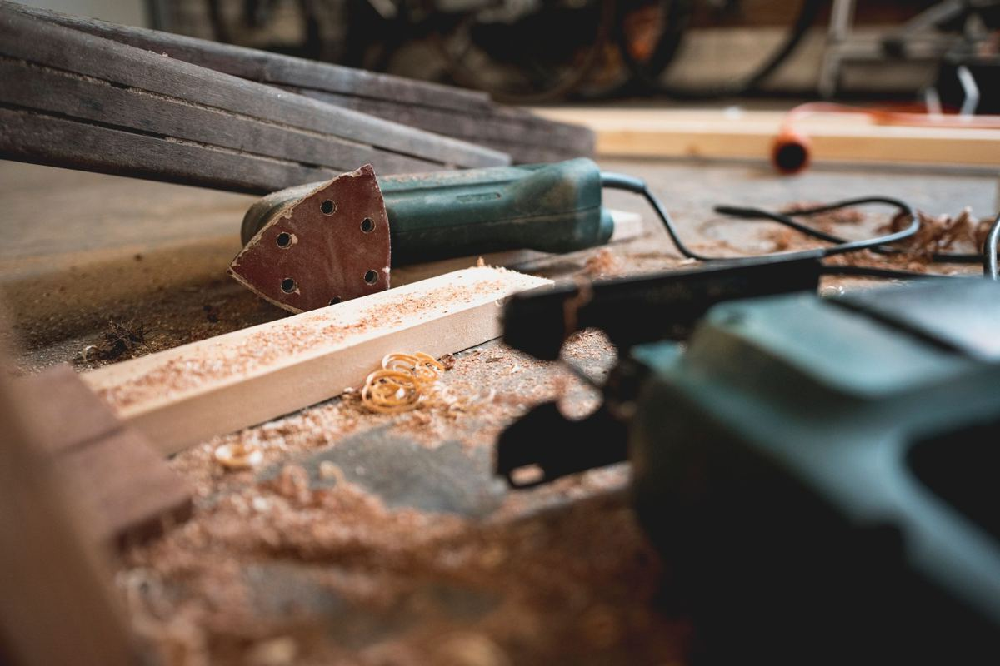

A workshop cleanout is mostly loose material, not big pieces. The volume is in lumber offcuts, hardware in jars and coffee cans, half-used supplies, a tool collection, and one or two unfinished projects. It comes out in three streams: things worth keeping or donating, ordinary waste, and a small shelf of chemicals that goes to the city instead. A detached shop or barn on acreage runs bigger, and we covered that in clearing out a barn, a shop or an outbuilding.
Two other posts cover the neighboring parts of this job. Garage shelving and workbenches handles anything bolted to a wall or a stud, and what is inside a shed covers the jugs and cans on the back shelf. This one is about the contents of a working space that stopped working.
What is actually in a workshop
Stand in the door and it never looks like much. Start carrying and it is a long afternoon. A used workshop or hobby room almost always sorts into five groups.
There are the tools, which is what people picture: hand tools, a bench grinder, a drill press, a table saw, a compressor, a chop saw on its stand, and three cordless drills with dead batteries.
There is material, which is what people forget. Lumber offcuts, sheet goods leaning against a wall, pipe, trim, plywood scraps, a coil of wire, tile left over from a bathroom that got redone years ago.
Then there is hardware, and this is the group everybody underestimates. Coffee cans and old jars of screws, nails, bolts, washers and fittings. It is heavy, it is slow to carry, and there is always more of it than the shelf suggested.
Supplies are the easy part: sandpaper, glue, tape, rags, filters, blades, brushes, half-used cans of finish.
Last is furniture, because a workshop always collects some. The stool, the old desk somebody works on, the office chair with the busted arm, the couch that got pushed out there when the living room was redone. That part is ordinary furniture removal work, and if the workshop is in an older Plano garage, the local detail is on our page for getting old furniture hauled out in Plano.
The tools nobody in the family wants
This is the conversation that stalls the job, especially when the workshop belonged to someone who has died or moved into care.
Offer them to the family first, and give it a real deadline rather than an open one. A box of tools in a garage waiting for a nephew to come get it is a box of tools that will still be there next year.
After that, tools in working order are one of the better donation categories there is. Habitat for Humanity ReStores accept donated goods including hand tools and building materials at many locations, and the local ReStore is worth a call before anything goes out as waste. Call ahead. What a ReStore takes varies by location and it changes.
What we will tell you plainly: we are haulers, not appraisers. If there is something in a workshop that might be worth real money, an old machinist's chest, a named hand plane, a vintage saw, find that out before we load it. We will not tell you a tool is worthless and we will not tell you it is valuable, because neither is our call to make.
Do the keep pass and the donation calls before the crew is booked. Once a truck is in the driveway the decision has already been made, and a workshop is the kind of room where people change their minds halfway through.
Lumber, offcuts and the scrap pile
The scrap pile is where the weight is, and it is the part most likely to be saved for a project that never happened.
Clean, untreated lumber is the easiest piece of this to place. Some of it is donatable through a ReStore, and the rest goes out as building material. The EPA's guidance on sustainable management of building materials explains where wood sits in that stream, and it is the same lane we use on a remodel job.
Treated lumber is different and it has its own rule, which is that it never goes on a burn pile. We covered that in detail in the post on fence and deck teardown debris.
Sawdust, shavings and the bag off the dust collector come out as ordinary waste. Take a second on the shop vac before it goes: people find money, keys and wedding rings in those.
The project on the bench
Every workshop has one. A boat, a dresser, a guitar, a model railroad, a bike frame, an engine on a stand. It has been half finished for a long time, and it is usually the real reason the room is still full.
Decide about the project before anything else moves. The rest of the room is easy once that is settled, and impossible while it is not. Either it leaves the house or it moves to a space where someone is genuinely going to work on it. Clearing everything around it and leaving it on the bench just rebuilds the same room in a smaller footprint.
If it belonged to someone who has passed, take a photo of it before it goes. Families ask for that more often than you would expect, and once it is on the trailer it is gone.
The shelf that is not ours to take
Every workshop has a shelf of things we cannot put on a truck, and it is normally at eye level right above the bench.
Finishes, stains, thinner, stripper, acetone, contact cement, two-part epoxy, old gas in a can, chain oil, aerosols, and anything with a warning label and no lid. These are household hazardous waste and they go to a city collection site. TCEQ keeps a plain-language page on household hazardous waste and what belongs in that stream, and Plano runs its own household chemical collection program that residents can use. Every city in the area has something similar.
Unlabeled containers are their own problem. If nobody knows what is in a jar, it does not get poured out and it does not go in a bag. It goes to the collection site as an unknown.
Lithium batteries, including the dead cordless drill packs, come off the shelf separately as well. Most city programs list them with the chemical collection rather than regular trash.
Nothing on that shelf stops us doing the rest of the job. We work around it and take everything else, and if the workshop is in Plano, the local detail is on our junk removal in Plano page.
How the job runs
Send a couple of photos, including one of the door and the path out. Workshops are often in a detached garage or a back building, and the route matters as much as the room does.
A crew looks at what is going and gives you a firm number before anything is lifted. The quote is the bill, and disposal is included. Usable tools and materials go to local donation partners where they will take them, metal goes to a recycler, and the rest goes out as waste. Our own crews do this work, which is why we can send people into a back building on a property nobody has been to in a while.
There is no rush on our end. Call before noon and the same afternoon is typical across the northern suburbs, and when the keep pile is settled, tell us what needs to come out.
Frequently asked questions
Do you take the tools, or do we have to deal with those?
We take them. The only ask is that you do the keep pass and any donation calls first, because tools are the thing families most often wish they had looked at one more time.
Can you take the lumber pile?
Yes. Untreated and treated lumber both come out on a normal job. Clean untreated wood goes into the building materials recycling stream rather than straight to landfill where that is available.
What about the cans of stain and thinner?
Those stay. They go to your city's household chemical collection site, and we will point you at the right page. It is the one part of a workshop we leave behind on purpose.
Will you take a table saw or a drill press?
Yes, and heavy shop equipment is a normal part of this job. Tell us in advance if it is upstairs or through a narrow door so the crew comes ready for it.
Do you sweep up after?
We do. Sawdust and hardware on a shop floor is part of the job, and the space should be usable when we pull out, not just empty.
A workshop is usually the last room in a house anybody wants to open, and that is exactly why it stays full. The rest of what we haul is on the services page.